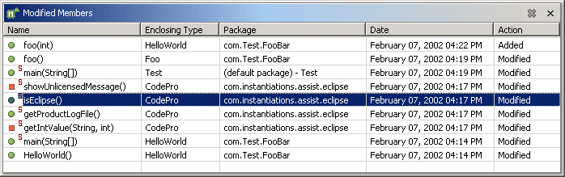

Modified MembersNote: This feature is not available under Eclipse 3.0 or above  The CodePro Modified Member view tracks all modifications or additions made to various types within the workspace. The members may be deleted or sorted by name, enclosing type, package, time of modification or type of modification (e.g., added or modified). Selecting a member in the list will open an editor and focus it on the code for the member. Options are provided via a preference page to show only the most recent n number of members and/or only those members modified in the specified time period (e.g., the last week, the last n days, etc.). |